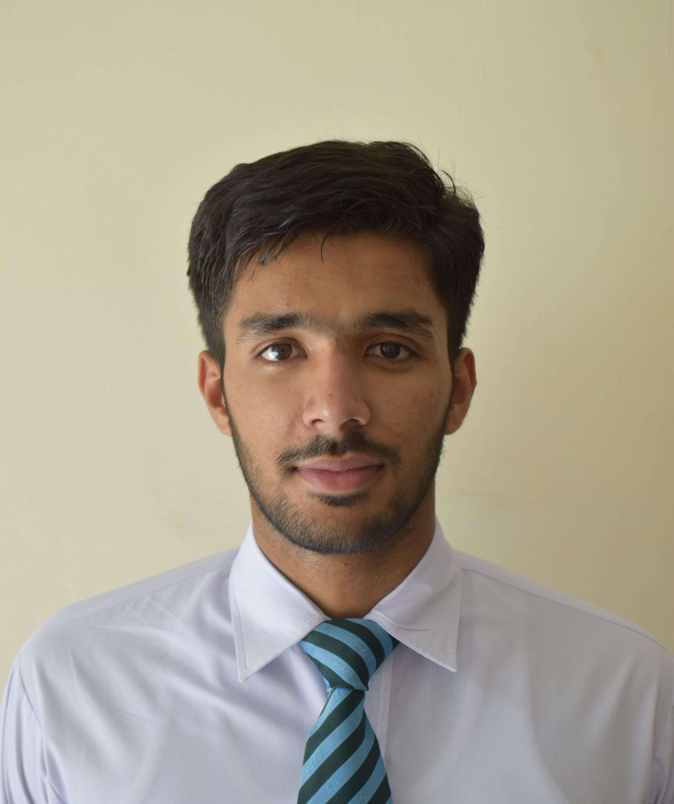

Ahmed Talal Sajid

Summary
A 2nd-year Software Engineering student with practical experience in web development, focused on building
responsive and user-friendly interfaces. Skilled in HTML, CSS, and responsive design with a passion for tackling
frontend challenges and translating design concepts into functional solutions.
Interests: Responsive web design, front-end development, user experience (UX) design.
Education
- Bachelors of Engineering, Software Engineering - Military College of Signals (2023-2027)
- Faculty of Science, Pre-engineering - Army Public School Risalpur (2021-2023)
- Relevant Course: Fundamentals of Programming, Object-Oriented Programming, Computer Architecture and Logic
Design, Linear
Algebra, Discrete Mathematics
Skills
- Languages
- Front-end Technologies
- Frameworks and Libraries
- Responsive Design
- Media Queries
- Flexbox
- CSS Grid
Awards and Achievements
- 5th Kyu Karateka - Recognized by Shotokan Karate International Federation (SKIF)
- Assisstant Head Prefect - Mount Safa International Islamic School, Malaysia
Other